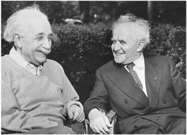

CHAPTER TWENTY-THREE
LANDMARK
1948–1953

With Israeli Prime Minister David Ben-Gurion in Princeton, 1951
The Endless Quest
The problems of the world were important to Einstein, but the problems of the cosmos helped him to keep earthly matters in perspective. Even though he was producing little of scientific significance, physics rather than politics would remain his defining endeavor until the day he died. One morning when walking to work with his scientific assistant and fellow arms control advocate Ernst Straus, Einstein mused at their ability to divide their time between the two realms. “But our equations are much more important to me,” Einstein added. “Politics is for the present, while our equations are for eternity.”1
Einstein had officially retired from the Institute for Advanced Study at the end of the war, when he turned 66. But he continued to work in a small office there every day, and he was still able to enlist the aid of loyal assistants willing to pursue what had come to be considered his quaint quest for a unified field theory.
Each weekday, he would wake at a civilized hour, eat breakfast and read the papers, and then around ten walk slowly up Mercer Street to the Institute, trailing stories both real and apocryphal. His colleague Abraham Pais recalled “one occasion when a car hit a tree after the driver suddenly recognized the face of the beautiful old man walking along the street, the black woolen knit cap firmly planted on his long white hair.”2
Soon after the war ended, J. Robert Oppenheimer came from Los Alamos to take over as director of the Institute. A brilliant, chain-smoking theoretical physicist, he proved charismatic and competent enough to be an inspiring leader for the scientists who built the atomic bomb. With his charm and biting wit, he tended to produce either acolytes or enemies, but Einstein fell into neither category. He and Oppenheimer viewed each other with a mixture of amusement and respect, which allowed them to develop a cordial though not close relationship.3
When Oppenheimer first visited the Institute in 1935, he called it a “madhouse” with “solipsistic luminaries shining in separate and hapless desolation.” As for the greatest of these luminaries, Oppenheimer declared, “Einstein is completely cuckoo,” though he seemed to mean it in an affectionate way.4
Once they became colleagues, Oppenheimer became more adroit at dealing with his luminous charges and his jabs became more subtle. Einstein, he declared, was “a landmark but not a beacon,” meaning he was admired for his great triumphs but attracted few apostles in his current endeavors, which was true. Years later, he provided another telling description of Einstein: “There was always in him a powerful purity at once childlike and profoundly stubborn.”5
Einstein became a closer friend, and a walking partner, of another iconic figure at the Institute, the intensely introverted Kurt Gödel, a German-speaking mathematical logician from Brno and Vienna. Gödel was famous for his “incompleteness theory,” a pair of logical proofs that purport to show that any useful mathematical system will have some propositions that cannot be proven true or false based on the postulates of that system.
Out of the supercharged German-speaking intellectual world, in which physics and mathematics and philosophy intertwined, three jarring theories of the twentieth century emerged: Einstein’s relativity, Heisenberg’s uncertainty, and Gödel’s incompleteness. The surface similarity of the three words, all of which conjure up a cosmos that is tentative and subjective, oversimplifies the theories and the connections between them. Nevertheless, they all seemed to have philosophical resonance, and this became the topic of discussion when Gödel and Einstein walked to work together.6
They were very different personalities. Einstein was filled with good humor and sagacity, both qualities lacking in Gödel, whose intense logic sometimes overwhelmed common sense. This was on glorious display when Gödel decided to become a U.S. citizen in 1947. He took his preparation for the exam very seriously, studied the Constitution carefully, and (as might be expected by the formulator of the incompleteness theory) found what he believed was a logical flaw. There was an internal inconsistency, he insisted, that could allow the entire government to degenerate into tyranny.
Concerned, Einstein decided to accompany—or chaperone—Gödel on his visit to Trenton to take the citizenship test, which was to be administered by the same judge who had done so for Einstein. On the drive, he and a third friend tried to distract Gödel and dissuade him from mentioning this perceived flaw, but to no avail. When the judge asked him about the Constitution, Gödel launched into his proof that its internal inconsistency made a dictatorship possible. Fortunately, the judge, who by now cherished his connection to Einstein, cut Gödel off. “You needn’t go into all that,” he said, and Gödel’s citizenship was saved.7
During their walks, Gödel explored some of the implications of relativity theory, and he came up with an analysis that called into question whether time, rather than merely being relative, could be said to exist at all. Einstein’s equations, he figured, could describe a universe that was rotating rather than (or in addition to) expanding. In such a case, the relationship between space and time could become, mathematically, mixed up. “The existence of an objective lapse of time,” he wrote, “means that reality consists of an infinity of layers of ‘now’ which come into existence successively. But if simultaneity is something relative, each observer has his own set of ‘nows,’ and none of these various layers can claim the prerogative of representing the objective lapse of time.”8
As a result, Gödel argued, time travel would be possible. “By making a round trip on a rocket ship in a sufficiently wide curve, it is possible in these worlds to travel into any region of the past, present and future, and back again.” That would be absurd, he noted, because then we could go back and chat with a younger version of ourselves (or, even more discomforting, our older version could come back and chat with us). “Gödel had achieved an amazing demonstration that time travel, strictly understood, was consistent with the theory of relativity,” writes Boston University philosophy professor Palle Yourgrau in his book on Gödel’s relationship with Einstein, World Without Time. “The primary result was a powerful argument that if time travel is possible, time itself is not.”9
Einstein responded to Gödel’s essay along with a variety of others that had been collected in a book, and he seemed to be mildly impressed but also not totally engaged by the argument. In his brief assessment, Einstein called Gödel’s “an important contribution” but noted that he had thought of the issue long ago and “the problem here involved disturbed me already.” He implied that although time travel may be true as a mathematical conceivability, it might not be possible in reality.“It will be interesting to weigh whether these are not to be excluded on physical grounds,” Einstein concluded.10
For his part, Einstein remained focused on his own white whale, which he pursued not with the demonic drive of Ahab but the dutiful serenity of Ishmael. In his quest for a unified field theory, he still had no compelling physical insight—such as the equivalence of gravity and acceleration, or the relativity of simultaneity—to guide his way, so his endeavors remained a groping through clouds of abstract mathematical equations with no ground lights to orient him. “It’s like being in an airship in which one can cruise around in the clouds but cannot see clearly how one can return to reality, i.e., earth,” he lamented to a friend.11
His goal, as it had been for decades, was to come up with a theory that encompassed both the electromagnetic and the gravitational fields, but he had no compelling reason to believe that they in fact had to be part of the same unified structure, other than his intuition that nature liked the beauty of simplicity.
Likewise, he was still hoping to explain the existence of particles in terms of a field theory by finding permissible pointlike solutions to his field equations. “He argued that if one believed wholeheartedly in the basic idea of a field theory, matter should enter not as an interloper but as an honest part of the field itself,” recalled one of his Princeton collaborators, Banesh Hoffmann. “Indeed, one might say that he wanted to build matter out of nothing but convolutions of spacetime.” In the process he used all sorts of mathematical devices, but constantly searched for others. “I need more mathematics,” he lamented at one point to Hoffmann.12
Why did he persist? Deep inside, such disjunctures and dualities—different field theories for gravity and electromagnetism, distinctions between particles and fields—had always discomforted him. Simplicity and unity, he intuitively believed, were hallmarks of the Old One’s handiwork. “A theory is more impressive the greater the simplicity of its premises, the more different things it relates, and the more expanded its area of applicability,” he wrote.13
In the early 1940s, Einstein returned for a while to the five-dimensional mathematical approach that he had adopted from Theodor Kaluza two decades earlier. He even worked on it with Wolfgang Pauli, the quantum mechanics pioneer, who had spent some of the war years in Princeton. But he could not get his equations to describe particles.14
So he moved on to a strategy dubbed “bivector fields.” Einstein seemed to be getting a little desperate. This new approach, he admitted, might require surrendering the principle of locality that he had sanctified in some of his thought-experiments assaulting quantum mechanics.15 In any event, it was soon abandoned as well.
Einstein’s final strategy, which he pursued for the final decade of his life, was a resurrection of one he had tried during the 1920s. It used a Riemannian metric that was not assumed to be symmetric, which opened the way for sixteen quantities. Ten combinations of them were used for gravity, and the remaining ones for electromagnetism.
Einstein sent early versions of this work to his old comrade Schrödinger. “I am sending them to nobody else, because you are the only person known to me who is not wearing blinders in regard to the fundamental questions in our science,” Einstein wrote. “The attempt depends on an idea that at first seems antiquated and unprofitable, the introduction of a non-symmetrical tensor ... Pauli stuck his tongue out at me when I told him about it.”16
Schrödinger spent three days poring over Einstein’s work and wrote back to say how impressed he was. “You are after big game,” he said.
Einstein was thrilled with such support. “This correspondence gives me great joy,” he replied, “because you are my closest brother and your brain runs so similarly to mine.” But he soon began to realize that the gossamer theories he was spinning were mathematically elegant but never seemed to relate to anything physical. “Inwardly I am not so certain as I previously asserted,” he confessed to Schrödinger a few months later. “We have squandered a lot of time on this, and the result looks like a gift from the devil’s grandmother.”17
And yet he soldiered on, churning out papers and producing the occasional headline. When a new edition of his book, The Meaning of Relativity, was being prepared in 1949, he added the latest version of the paper he had shown Schrödinger as an appendix. The New York Times reprinted an entire page of complex equations from the manuscript, along with a front-page story headlined “New Einstein Theory Gives a Master Key to Universe: Scientist, after 30 Years’ Work, Evolves Concept That Promises to Bridge Gap between the Star and the Atom.”18
But Einstein soon realized that it still wasn’t right. During the six weeks between when he submitted the chapter and when it went to the printers, he had second thoughts and revised it yet again.
In fact, he continued to revise the theory repeatedly, but to no avail. His growing pessimism was visible in the lamentations he sent to his old friend from the Olympia Academy days, Maurice Solovine, then Einstein’s publisher in Paris. “I shall never ever solve it,” he wrote in 1948. “It will be forgotten and must later be rediscovered again.”Then, the following year: “I am uncertain as to whether I was even on the right track. The current generation sees in me both a heretic and a reactionary who has, so to speak, outlived himself.” And, with some resignation, in 1951: “The unified field theory has been put into retirement. It is so difficult to employ mathematically that I have not been able to verify it. This state of affairs will last for many more years, mainly because physicists have no understanding of logical and philosophical arguments.”19
Einstein’s quest for a unified theory was destined to produce no tangible results that added to the framework of physics. He was able to come up with no great insights or thought experiments, no intuitions about underlying principles, to help him visualize his goal. “No pictures came to our aid,” his collaborator Hoffmann lamented. “It is intensely mathematical, and over the years, with helpers and alone, Einstein surmounted difficulty after difficulty, only to find new ones awaiting him.”20
Perhaps the search was futile. And if it turns out a century from now that there is indeed no unified theory to be found, it will also look misconceived. But Einstein never regretted his dedication to it. When a colleague asked him one day why he was spending—perhaps squandering—his time in this lonely endeavor, he replied that even if the chance of finding a unified theory was small, the attempt was worthy. He had already made his name, he noted. His position was secure, and he could afford to take the risk and expend the time. A younger theorist, however, could not take such a risk, for he might thus sacrifice a promising career. So, Einstein said, it was his duty to do it.21
Einstein’s repeated failures in seeking a unified theory did not soften his skepticism about quantum mechanics. Niels Bohr, his frequent sparring partner, came to the Institute for a stay in 1948 and spent part of his time writing an essay on their debates at the Solvay Conferences before the war.22 Struggling with the article in his office one floor above Einstein’s, he developed writer’s block and called in Abraham Pais to help him. As Bohr paced furiously around an oblong table, Pais coaxed him and took notes.
When he got frustrated, Bohr sometimes would simply sputter the same word over and over. Soon he was doing so with Einstein’s name. He walked to the window and kept muttering, over and over, “Einstein . . . Einstein . . .”
At one such moment, Einstein softly opened the door, tiptoed in, and signaled to Pais not to say anything. He had come to steal a bit of tobacco, which his doctor had ordered him not to buy. Bohr kept muttering, finally spurting out one last loud “Einstein” and then turning around to find himself staring at the cause of his anxieties. “It is an understatement to say that for a moment Bohr was speechless,” Pais recalled. Then, after an instant, they all burst into laughter.23
Another colleague who tried and failed to convert Einstein was John Wheeler, Princeton University’s renowned theoretical physicist. One afternoon he came by Mercer Street to explain a new approach to quantum theory (known as the sum-over-histories approach) that he was developing with his graduate student, Richard Feynman. “I had gone to Einstein with the hope to persuade him of the naturalness of the quantum theory when seen in this new light,” Wheeler recalled. Einstein listened patiently for twenty minutes, but when it was over repeated his very familiar refrain: “I still cannot believe that the good Lord plays dice.”
Wheeler showed his disappointment, and Einstein softened his pronouncement slightly. “Of course, I may be wrong,” he said in a slow and humorous cadence. Pause. “But perhaps I have earned the right to make my mistakes.” Einstein later confided to a woman friend, “I don’t think I’ll live to find out who is correct.”
Wheeler kept coming back, sometimes bringing his students, and Einstein admitted that he found many of his arguments “sensible.” But he was never converted. Near the end of his life, Einstein regaled a small group of Wheeler’s students. When the talk turned to quantum mechanics, he once again tried to poke holes in the idea that our observations can affect and determine realities. “When a mouse observes,” Einstein asked them, “does that change the state of the universe?”24
The Lion in Winter
Mileva Mari , her health deteriorating due to a succession of minor strokes, was still living in Zurich and trying to take care of their institutionalized son, Eduard, whose behavior had become increasingly erratic and violent. Financial problems again plagued her and revived the tension with her former husband. The portion of the money that he had put into trust for her in America from the Nobel Prize had slipped away during the Depression, and two of her three apartment houses had been sold to help pay for Eduard’s care. By late 1946, Einstein was pushing to sell the remaining house and give control of the money to a legal guardian who would be appointed for Eduard. But Mari had the usufruct of the house and its proceeds, as well as power of attorney over it, and she was terrified of surrendering any control.25
, her health deteriorating due to a succession of minor strokes, was still living in Zurich and trying to take care of their institutionalized son, Eduard, whose behavior had become increasingly erratic and violent. Financial problems again plagued her and revived the tension with her former husband. The portion of the money that he had put into trust for her in America from the Nobel Prize had slipped away during the Depression, and two of her three apartment houses had been sold to help pay for Eduard’s care. By late 1946, Einstein was pushing to sell the remaining house and give control of the money to a legal guardian who would be appointed for Eduard. But Mari had the usufruct of the house and its proceeds, as well as power of attorney over it, and she was terrified of surrendering any control.25
One cold day later that winter, she slipped on the ice on the way to see Eduard and ended up lying unconscious until strangers found her. She knew she was going to die soon, and she had recurring nightmares about struggling through the snow, unable to reach Eduard. She was panicked about what would happen to him, and wrote heart-wrenching letters to Hans Albert.26
Einstein succeeded in selling her house by early 1948, but with her power of attorney she blocked the proceeds from being sent to him. He wrote to Hans Albert, giving him all the details and promising him that, whatever happened, he would take care of Eduard “even if it costs me all my savings.”27 That May, Mari had a stroke and lapsed into a trance in which she repeatedly muttered only “No, no!” until she died three months later. The money from the sale of her apartment, 85,000 Swiss francs, was found under her mattress.
Eduard lapsed into a daze and never spoke of his mother again. Carl Seelig, a friend of Einstein’s who lived nearby, visited him frequently and sent back regular reports to Einstein. Seelig hoped to get him to make contact with his son, but he never did. “There is something blocking me that I am unable to analyze fully,” Einstein told Seelig. “I believe I would be arousing painful feelings of various kinds in him if I made an appearance in whatever form.”28
Einstein’s own health began to decline in 1948 as well. For years he had been plagued by stomach ailments and anemia, and late that year, after an attack of sharp pains and vomiting, he checked into the Jewish Hospital in Brooklyn. Exploratory surgery revealed an aneurysm in the abdominal aorta,* but doctors decided there was not much they could do about it. It was assumed, correctly, that it was likely to kill him one day, but in the meantime he could live on borrowed time and a healthy diet.29
To recuperate, he went on the longest trip he would make during his twenty-two years as a Princeton resident: down to Sarasota, Florida. For once, he successfully avoided publicity. “Einstein Elusive Sarasota Visitor,” the local paper lamented.
Helen Dukas accompanied him. After Elsa’s death, she had become even more of a loyal guardian, and she even shielded Einstein from letters written by Hans Albert’s daughter, Evelyn. Hans Albert suspected that Dukas may have had an affair with his father, and said so to others. “On many occasions, Hans Albert told me of his long-held suspicion,” family friend Peter Bucky later recalled. But others who knew Dukas found the suggestion to be implausible.30
By then, Einstein had become much friendlier with his son, now a respected engineering professor at Berkeley. “Whenever we met,” Hans Albert later recalled of his trips east to see his father, “we mutually reported on all the interesting developments in our field and in our work.” Einstein particularly loved learning about new inventions and solutions to puzzles. “Maybe both, inventions and puzzles, reminded him of the happy, carefree, and successful days at the patent office in Bern,” said Hans Albert.31
Einstein’s beloved sister, Maja, the closest intimate of his life, was also in declining health. She had come to Princeton when Mussolini enacted anti-Jewish laws, but her husband, Paul Winteler, from whom she had been drifting apart for many years,32 moved to Switzerland to be with his own sister and her husband, Michele Besso. They corresponded often, but never rejoined one another.
Maja began, as Elsa had, to look more like Einstein, with radiating silver hair and a devilish smile. The inflection of her voice and the slightly skeptical wry tone she used when asking questions were similar to his. Although she was a vegetarian, she loved hot dogs, so Einstein decreed that they were a vegetable, and that satisfied her.33
Maja had suffered a stroke and, by 1948, was confined to bed most of the time. Einstein doted on her as he did no other person. Every evening he read aloud to her. Sometimes the fare was heavy, such as the arguments of Ptolemy against Aristarchus’s opinion that the world rotates around the sun. “I could not help thinking of certain arguments of present-day physicists: learned and subtle, but without insight,” he wrote Solovine about that evening. Other times, the readings were lighter but perhaps just as revealing, such as the evenings he read from Don Quixote; he sometimes compared his own quixotic parries against the prevailing windmills of science with that of the old knight with a ready lance.34
When Maja died in June 1951, Einstein was grief-stricken. “I miss her more than can be imagined,” he wrote a friend. He sat on the back porch of his Mercer Street home for hours, pale and tense, staring into space. When his stepdaughter Margot came to console him, he pointed to the sky and said, as if reassuring himself, “Look into nature, and then you will understand it better.”35
Margot had likewise left her husband, who responded by writing, as he had long wanted to, an unauthorized biography of Einstein. She worshipped Einstein, and each year they grew closer. He found her presence charming. “When Margot speaks,” he said, “you see flowers growing.”36
His ability to engender and feel such affection belied his reputation for being emotionally distant. Both Maja and Margot preferred living with him to living with their own husbands as they got older. He had been a difficult husband and father because he did not take well to any constricting bonds, but he could also be intense and passionate, both with family and friends, when he found himself engaged rather than confined.
Einstein was human, and thus both good and flawed, and the greatest of his failings came in the realm of the personal. He had lifelong friends who were devoted to him, and he had family members who doted on him, but there were also those few—Mileva and Eduard foremost among them—whom he simply walled out when the relationship became too painful.
As for his colleagues, they saw his kindly side. He was gentle and generous with partners and subordinates, both those who agreed with him and those who didn’t. He had deep friendships lasting for decades. He was unfailingly benevolent to his assistants. His warmth, sometimes missing at home, radiated on the rest of humanity. So as he grew old, he was not only respected and revered by his colleagues, he was loved.
They honored him, with the blend of scientific and personal camaraderie he had enjoyed since his student days, at a seventieth birthday convocation upon his return from his Florida recuperation. Although the talks were supposed to focus on Einstein’s science, most dwelled on his sweetness and humanity. When he walked in, there was a hush, then thunderous applause. “Einstein just had no sense at all about what absolute reverence there was for him,” one of his assistants recalled.37
His closest friends at the Institute bought him a present, an advanced AM-FM radio and high-fidelity record player, which they installed in his home secretly when he was at work one day. Einstein was thrilled and used it not only for music but for news. In particular, he liked to catch Howard K. Smith’s commentaries.
He had pretty much given up the violin by then. It was too hard on his aging fingers. Instead, he focused on the piano, which he was not quite as good at playing. Once, after repeatedly stumbling on a passage, he turned to Margot and smiled. “Mozart wrote such nonsense here,” he said.38
He came to look even more like a prophet, with his hair getting longer, his eyes a bit sadder and more weary. His face grew more deeply etched yet somehow more delicate. It showed wisdom and wear but still a vitality. He was dreamy, as he was when a child, but also now serene.
“I am generally regarded as sort of a petrified object,” he noted to Max Born, then a professor in Edinburgh, one of those friends whose affection had lasted so long. “I find this role not too distasteful, as it corresponds very well with my temperament ...I simply enjoy giving more than receiving in every respect, do not take myself nor the doings of the masses seriously, am not ashamed of my weaknesses and vices, and naturally take things as they come with equanimity and humor.”39
Israel’s Presidency
Before the Second World War, Einstein had stated his opposition to a Jewish state when speaking to three thousand celebrants at a Manhattan hotel seder. “My awareness of the essential nature of Judaism resists the idea of a Jewish state with borders, an army, and a measure of temporal power,” he said. “I am afraid of the inner damage Judaism will sustain—especially from the development of a narrow nationalism within our ranks. We are no longer the Jews of the Maccabee period.”40
After the war, he took the same stance. When he testified in Washington in 1946 to an international committee looking into the situation in Palestine, he denounced the British for pitting Jews against Arabs, called for more Jewish immigration, but rejected the idea that the Jews should be nationalistic. “The State idea is not in my heart,” he said in a quiet whisper that reverberated through the shocked audience of ardent Zionists. “I cannot understand why it is needed.”41 Rabbi Stephen Wise was flabbergasted that Einstein would break ranks with true Zionists at such a public hearing, and he got him to sign a clarifying statement that was, in fact, not clarifying at all.
Einstein was especially dismayed by the militaristic methods used by Menachem Begin and other Jewish militia leaders, and he joined with his occasional antagonist Sidney Hook to sign a petition in the New York Times denouncing Begin as a “terrorist” and “closely akin” to the fascists.42 The violence was contrary to Jewish heritage. “We imitate the stupid nationalism and racial nonsense of the goyim,” he wrote a friend in 1947.
But when the State of Israel was declared in 1948, Einstein wrote the same friend to say that his attitude had changed. “I have never considered the idea of a state a good one, for economic, political and military reasons,” he conceded. “But now, there is no going back, and one has to fight it out.”43
The creation of Israel caused him, yet again, to back away from the pure pacifism he had once embraced. “We may regret that we have to use methods that are repulsive and stupid to us,” he wrote to a Jewish group in Uruguay, “but to bring about better conditions in the international sphere, we must first of all maintain our experience by all means at our disposal.”44
Chaim Weizmann, the indefatigable Zionist who brought Einstein to America in 1921, had become Israel’s first president, a prestigious but generally ceremonial post in a system that vested most power in the prime minister and cabinet. When he died in November 1952, a Jerusalem newspaper began urging that Einstein be tapped to replace him. Prime Minister David Ben-Gurion bowed to the pressure, and word quickly spread that Einstein would be asked.
It was an idea that was at once both astonishing and obvious—and also impractical. Einstein first learned of it from a small article in the New York Times a week after Weizmann’s death. At first he and the women in his house laughed it off, but then reporters started to call. “This is very awkward, very awkward,” he told a visitor. A few hours later, a telegram arrived from Israel’s ambassador in Washington, Abba Eban. Could the embassy, it asked, send someone the next day to see him officially?
“Why should that man come all that way,” Einstein lamented, “when I only will have to say no?”
Helen Dukas came up with the idea of simply giving Ambassador Eban a phone call. In those days, impromptu long-distance calls were somewhat novel. To her surprise, she was able to track Eban down in Washington and put him on the line with Einstein.
“I am not the person for that and I cannot possibly do it,” Einstein said.
“I cannot tell my government that you phoned me and said no,” Eban replied. “I have to go through the motions and present the offer officially.”
Eban ended up sending a deputy, who handed Einstein a formal letter asking if he would take on the presidency. “Acceptance would entail moving to Israel and taking its citizenship,” Eban’s letter noted (presumably in case Einstein harbored any fantasy that he could preside over Israel from Princeton). Eban hastened to reassure Einstein, however: “Freedom to pursue your great scientific work would be afforded by a government and people who are fully conscious of the supreme significance of your labors.” In other words, it was a job that would require his presence, but not much else.
Even though the offer seemed somewhat strange, it was a powerful testament to Einstein’s unsurpassed standing as a hero of world Jewry. It “embodies the deepest respect which the Jewish people can repose in any of its sons,” Eban said.
Einstein had already prepared his note of rejection, which he handed to Eban’s envoy as soon as he arrived. “I have been a lawyer all my life,” the visitor joked, “and I have never gotten a rebuttal before I have stated my case.”
He was “deeply moved” by the offer, Einstein said in his prepared response, and “at once saddened and ashamed” that he would not accept it. “All my life I have dealt with objective matters, hence I lack both the natural aptitude and the experience to deal properly with people and to exercise official function,” he explained. “I am the more distressed over these circumstances because my relationship with the Jewish people became my strongest human tie once I achieved complete clarity about our precarious position among the nations of the world.”45
Offering Einstein the presidency of Israel was a clever idea, but Einstein was right to realize that sometimes a brilliant idea is also a very bad one. As he noted with his usual wry self-awareness, he did not have the natural aptitude to deal with people in the way the role would require, nor did he have the temperament to be an official functionary. He was not cut out to be either a statesman or a figurehead.
He liked to speak his mind, and he had no patience for the compromises necessary to manage, or even symbolically lead, complex organizations. Back when he was involved as a figurehead leader in the establishing of Hebrew University, he had not possessed the talent to handle, nor the temperament to ignore, all of the maneuverings involved. Likewise, he had more recently had the same unpleasant experiences with a group creating Brandeis University near Boston, which caused him to resign from that endeavor.46
In addition, he had never displayed a discernible ability to run anything. The only formal administrative duty he had ever undertaken was to head a new physics institute at the University of Berlin. He did little other than hire his stepdaughter to handle some clerical tasks and give a job to the astronomer trying to confirm his theories.
Einstein’s brilliance sprang from being a rebel and nonconformist who recoiled at any attempt to restrain his free expression. Are there any worse traits for someone who is supposed to be a political conciliator? As he explained in a polite letter to the Jerusalem newspaper that had been campaigning for him, he did not want to face the chance that he would have to go along with a government decision that “might create a conflict with my conscience.”
In society as in science, he was better off remaining a nonconformist. “It is true that many a rebel has in the end become a figure of responsibility,” Einstein conceded to a friend that week, “but I cannot bring myself to do so.”47
Ben-Gurion was secretly relieved. He had begun to realize that the idea was a bad one. “Tell me what to do if he says yes!” he joked to his assistant. “I’ve had to offer the post to him because it’s impossible not to. But if he accepts, we are in for trouble.” Two days later, when Ambassador Eban ran into Einstein at a black-tie reception in New York, he was happy that the issue was behind them. Einstein was not wearing socks.48